My Guitars 04
入手した順に載せている。2021～現在。
- Burny RLC-45 - See Through Blue
- Fernandes FR-85S - SGM
- Squier Classic Vibe 50s Telecaster - Butterscotch Blonde → 22F Esquire Mod
- Squier 51 - Black → 22F Vintage Natural Mod
- Bacchus Imperial 24-BP-RSM/M - BL-B
- Ibanez RG175B - Black
- ← My Guitars 03 ： 21～30本目
Burny RLC-45 - See Through Blue
{kind=link}
{kind=link}
{kind=link}
{kind=link}
{kind=link}
{kind=link}
{kind=link}
- 購入日 ： 2021-11-15
- 購入価格 ： 24,000円
- 生産時期 ： 2002年頃
- 指板・フレット数 ： ローズウッド・22F
父が2001年頃に購入し、自分がギターを始めた2006年頃から2010年ぐらいまでずっと借りて使っていた Burny RLC-45 - See Through Blue (売却済)。自分にとって初めてのギターであり、青いボディカラーが美しく、お気に入りのギターであった。
父の個体は2017年頃に売却してしまっていたのだが、自分はあのギターをまた弾きたいなぁと思っていた。日々ヤフオクを漁っていて、ついに同型番・同カラーのモノを発見したので、勢いでポチった。
この個体は、ヤフオクの説明によると2002年製で、シリアルは FG02090563。父が持っていた個体のシリアルナンバーは、写真がほとんど残っておらず正確には分からない (写真がブレていて判別が難しい) のだが、FG03080096、っぽい。先頭が「FG030」なのは確実で、その次が「8」か「6」か「9」か、ちょっと怪しい感じ。この時期の Fernandes・Burny のシリアルナンバーは「FG + 西暦下2桁」という表記らしいので、父の記憶では「2001年頃に購入した」とのことだったが、実際は2003年製の個体だった可能性が高い。カタログ掲載も2002年と2003年のみなので、父の「2001年頃購入」という記憶とは少しズレるかも。そうすると、今回買った個体は、父が持っていた個体より1歳年上の個体になるかもしれない。
父が持っていた個体はもっと濃い、紺色・黒色に近いような青色だったのだが、この個体はもっと青色が明るい印象。直射日光などで少し退色したということなのだろうか。ほぼ20年前のギターで、多少の傷やプラスチックパーツの割れ、ゴールドパーツの色落ちなどは見受けられるが、割とキレイに保っている。
持った瞬間や弾き心地が、メチャクチャ懐かしかった。あぁコレコレ！という感じで、自分の手に吸い付くような感覚。一番弾き慣れたギターだったんだなと思う。
このギターを使って父に1曲プレゼントするのが夢なので、練習に励むのである。w
Fernandes FR-85S - SGM
{kind=link}
{kind=link}
{kind=link}
- 購入日 ： 2022-08-28
- 購入価格 ： 20,300円
- 生産時期 ： 1994年頃
- 指板・フレット数 ： ローズウッド・24F
以前所有していた Fernandes FR-85S - Metal Black (売却済) と同型のモノを買い直した。詳細は以前の FR-85S の方に記載しているが、本機の「24フレットでフルモードサスティナーを搭載した FR-85S」というのは、1994～1995年の間に短期間のみ製造されたレアスペックである。以降の FR-85S は 22F になっていたり、サスティナーライトが載せられた時期があったりで、「24F・フルモード」となると中々レアなのである。それがたまたまヤフオクで格安で出品されていたので、ついポチってしまった。ｗ
今回購入したのは初めて見るカラーで、グリーン系の色だがブルーっぽくも見える、青緑のような色味であった。このカラーは何と言うのだろう？
気になって調べていると、フェルナンデス社公式サイトのカタログページにある Voice 1995 という1995年のカタログに本機が掲載されていた。コレを見ると FR-85S は4色展開されていて、以前持っていたカラーである MBK (黒)、その他に SGM (緑系)、LBM (青系)、WRM (赤系) があったようだ。カタログ写真からするに、自分が購入したのは SGM カラーだと分かったのだが、この SGM というのが何の略称なのかが分からない。
他の色については、前後の年代のカタログも確認して、「カラーチャート」のページに記載が確認できた。MBK：Metallic Black、LBM：Lake Blue Metallic、WRM：Wine Red Metallic、であった。しかし SGM カラーはこの中でもさらに短期間で消滅したようで、カラーチャートには一度も登場していなかった。近しいカラーとして、
- TQM：TurQuoise Metallic
- SFG：SurF Green
- SG：Shining Green
といったカラーはあったのだが、この辺から推測するに、SGM は「Surf Green Metallic」の略なのではないか？と思う。もしくは「Shining Green Metallic」か？いずれにしても、「青！」とも「緑！」とも言い切れない中間色である。
搭載されているサスティナードライバーは、初期の CD-100 (Version 1.0)。コチラはピックアップ機能はない (つまり後継機 CD-101 のようなリバーシブル・ドライバーではない)。Wikipedia の記載によれば、センターシングル PU は VS-200、リアハムは VH-401 とのこと。1995年前後のカタログにある「ピックアップ単品」のページにはそのような型番の記載がなかったので、詳しい型番はよく分からない。3 Way セレクターが付いているのだが、どういう構成なんだろうかよく分からない。ｗ
以前持っていたギターの同モデル品なので、特に違和感なし。以前持っていた個体と比べるとフレットが残っている方かな？サスティナーの効きも問題なく、1994年頃のギターにしてはかなりの美品を手に入れられたと思う。
- 参考：13B035 FERNANDES FR-85S 青 - 【中古ギター専門店】『ギターオフ 本店』 ～最高のギターをお届け～ … 本機と同型・同じカラーの写真がある
Squier Classic Vibe 50s Telecaster - Butterscotch Blonde → 22F Esquire Mod
{kind=link}
{kind=link}
{kind=link}
{kind=link}
- 購入日 ： 2022-10-14
- 購入価格 ： 28,490円
- 生産時期 ： 2015年頃
- 指板・フレット数 ： メイプル・21F
何本目だよテレキャスター、と言われそうだが、すんませんまたテレキャスです。現所有は TL52 ボディと TN-SPL ネックのニコイチ君と本機の2本だけだが、過去には TLM-55M、Lite Ash Tele も持っていたのでコレで4本目。
2015年製の Squier テレなのだが、2022年現在のモノとは細部のスペックが異なっている。購入したモノはブラスサドルだったり、ヘッドロゴやストリングガイドの位置が違ったりする。
今回はこのテレキャスを元に、DIY で「22フレット搭載 Esquire」を作ってみようと計画している。ずっとエスクワイアが欲しいと思っていたのだが、中々安いモノは出回らず、だったら作ってみるかーということで、安いベース機を買ってみた。ちなみに海外の限定モデルとして、この Squier Classic Vibe テレをそのままエスクワイア化したモデルが一時期販売されていたらしい。それが手に入れば良かったんだが…ｗ。ゆっくり改造していくので、完成はいつになることやら。
2022-12-26 追記 : 2022-12-10 頃から材料集めを始め、2022-12-26 にエスクワイア化が完了した。詳細はコチラ → Squier Telecaster をベースに Esquire を作ろう！


Squier 51 - Black → 22F Vintage Natural Mod
{kind=link}
{kind=link}
{kind=link}
{kind=link}
- 購入日 ： 2022-12-21
- 購入価格 ： 22,000円
- 生産時期 ： 不明
- 指板・フレット数 ： メイプル・21F → 22F
以前持っていた Squier 51 - Vintage Blonde (売却済)。Fender Japan PS-51 版を買いたいと思っていたのだが、ヴィンテージブロンド色は人気なのか中々中古市場に出回らず、業を煮やしてブラックカラーを購入。そして自分で塗装をリフィニッシュして 22F も増設することにした。
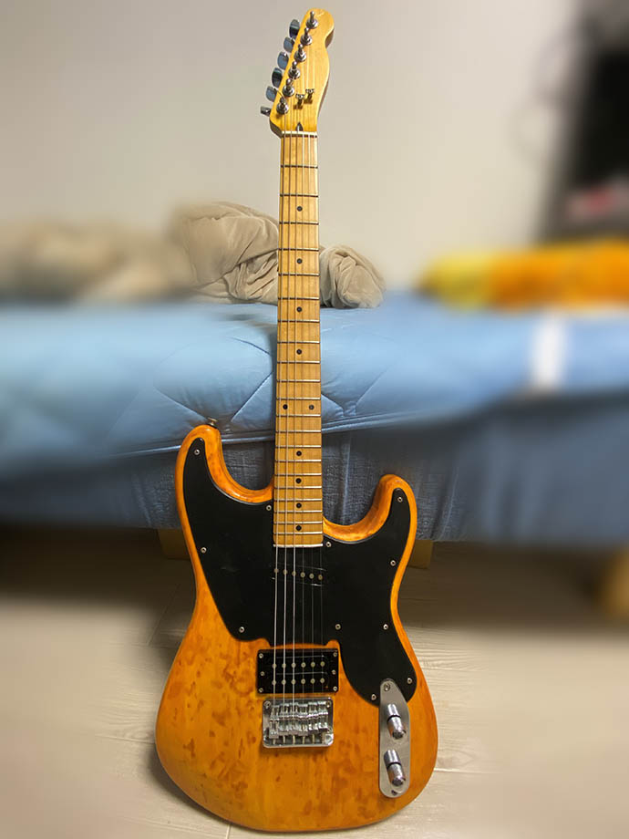 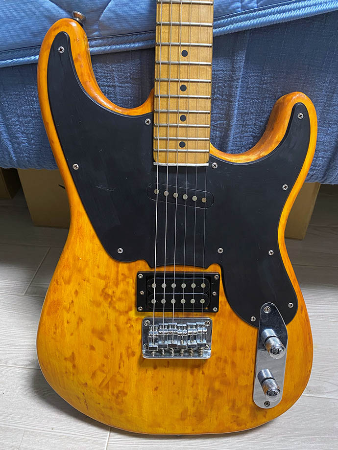 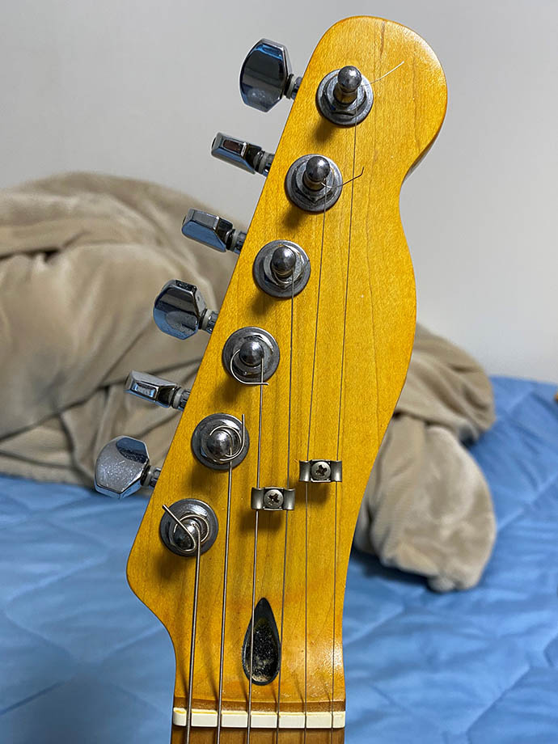 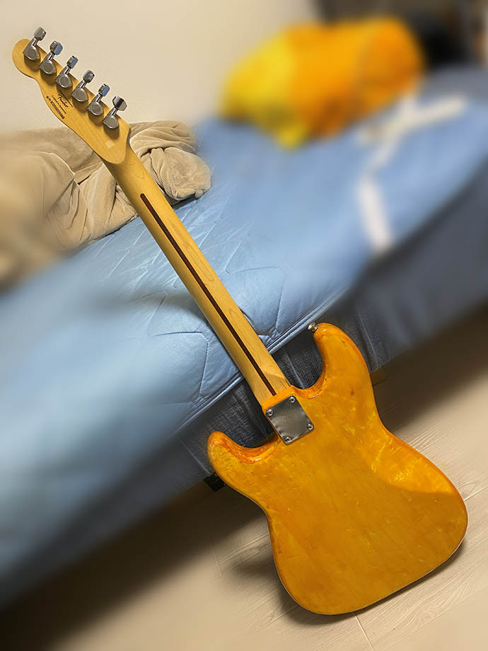 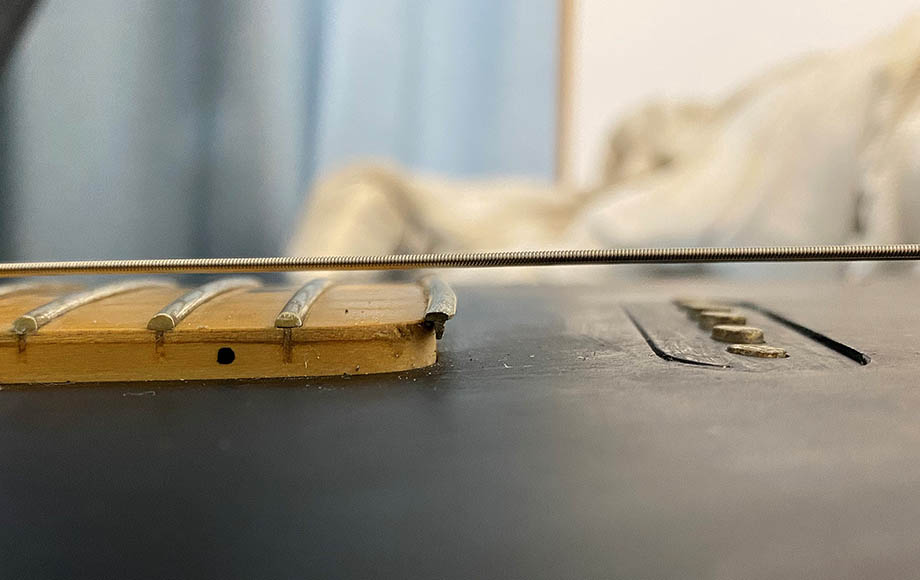 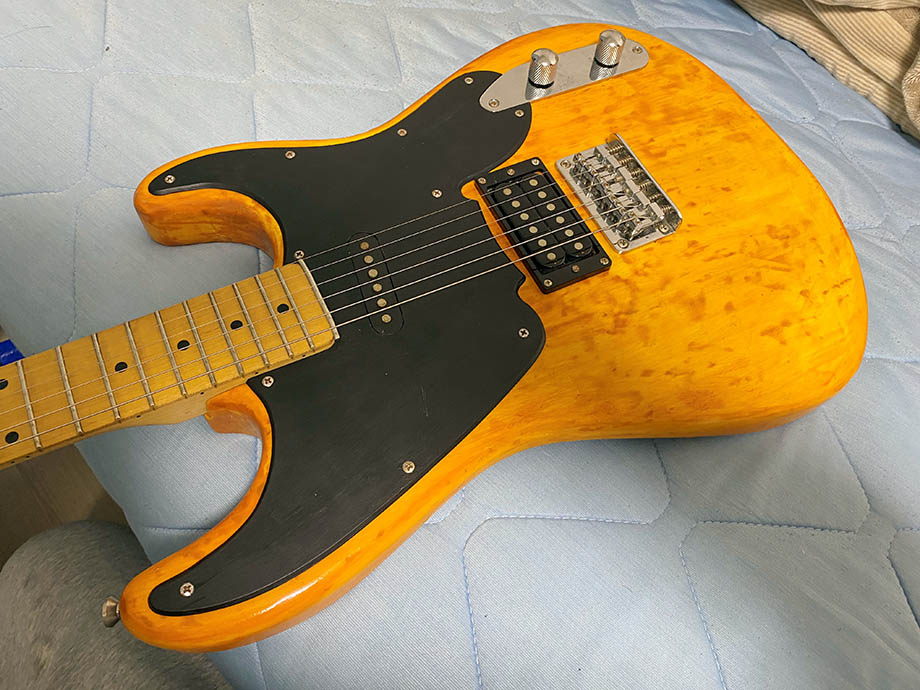 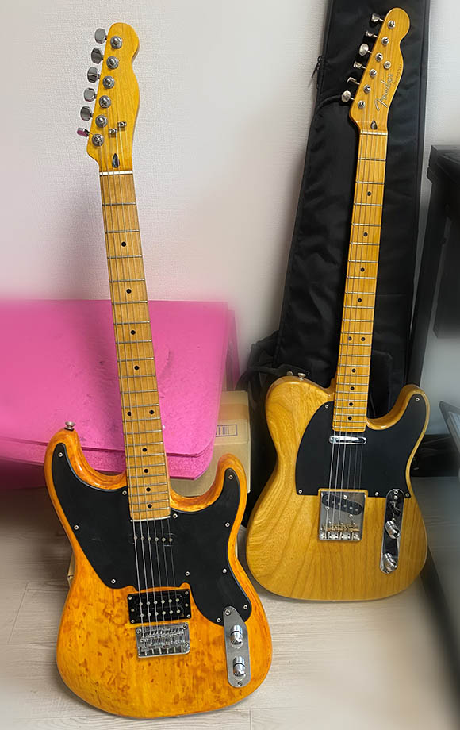
{kind=link}
{kind=link}
{kind=link}
{kind=link}
{kind=link}
{kind=link}
{kind=link}
スクレイパーと Amazon で買った激安のヒートガンで黒のポリ塗装を剥がす。初めてだったのでサンディングシーラー層から木部までえぐってしまった箇所もあって、「和信 水性サンディングシーラー」を厚めに筆塗りしてパテ代わりにした。それから「和信 水性ニス・メイプル」を筆塗りしてみたのだが、思っていたよりも赤茶色になっていって、想定のヴィンテージナチュラルよりも赤黒くなってしまったので、一度剥がし、今度はダイソーで買った水性ニスの「けやき」カラーを筆塗りした。サンディングシーラー部分にメイプルカラーが残ってしまい、茶色のシミみたいなのがあちこちに残ってしまったが、もうやる気が失せていたので諦めた。好みの色になったら「和信 水性ニス 透明クリヤー」を上から塗ってクリアコート (トップコート) とした。
ピックガードとフロントピックアップのプラスチック部分は、「クレオス Mr. カラー C33 つや消しブラック」という溶剤系樹脂塗料を筆塗りした。ココまでの作業は、騒音対策に電動サンダーを使わず手で紙ヤスリをし、異臭対策にアクリルラッカースプレーを使わず水性ニスを筆塗りとして作業していた。Esquire を作った時の教訓より。ｗ
あとはヘッドロゴを削って再塗装したのと、22F をネック端に瞬間接着剤で貼り付けたのは Esquire 改造の時と同じ。今回は電装系はハンダの付け外しのみで何も回路は変えていないので、出来上がりの音は良い感じだった。
和信の水性ニスやサンディングシーラー、百均の筆に水性ニス、Mr. カラーも100円ちょっとと激安でこんな改造ができてしまう。楽しい。
Bacchus Imperial 24-BP-RSM/M - BL-B
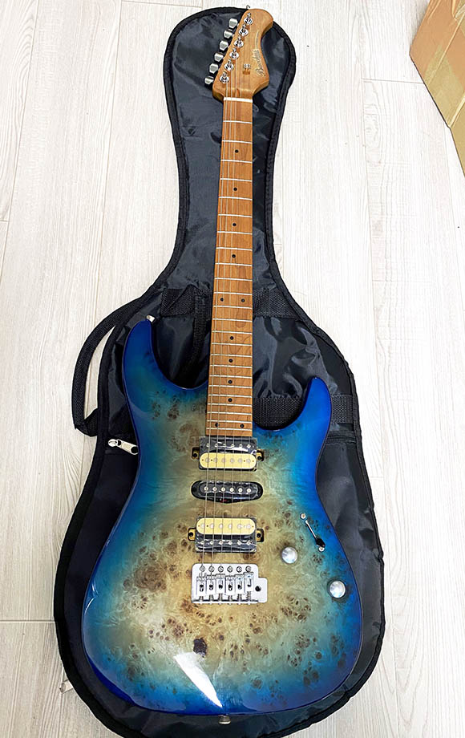 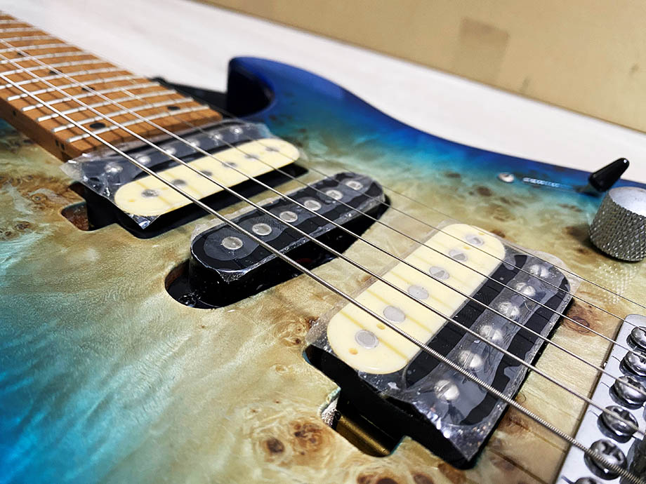 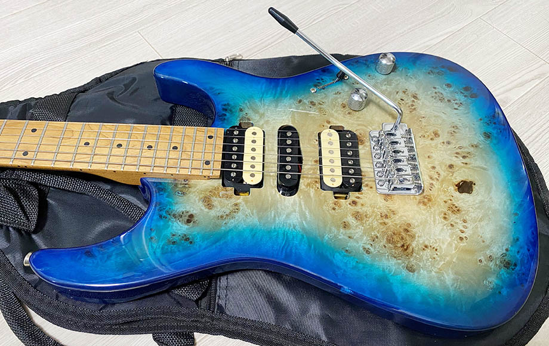 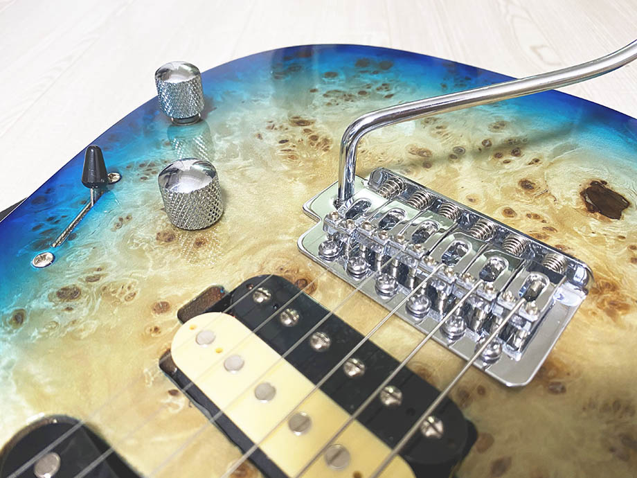 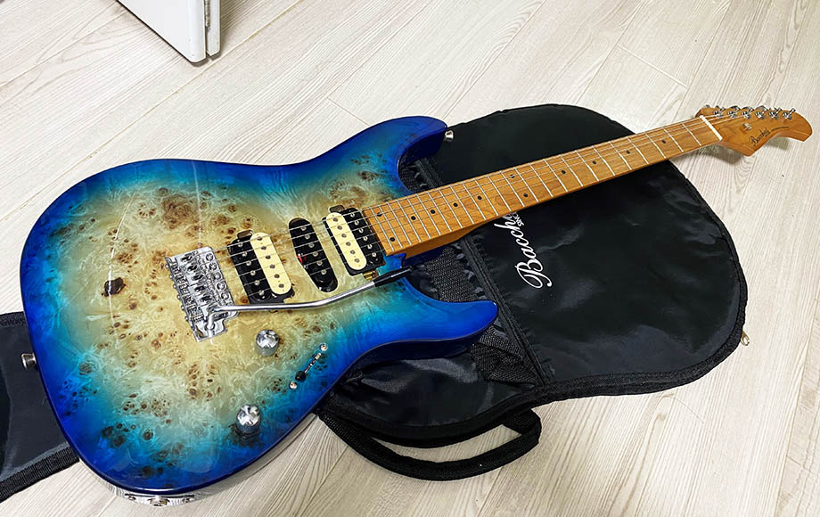 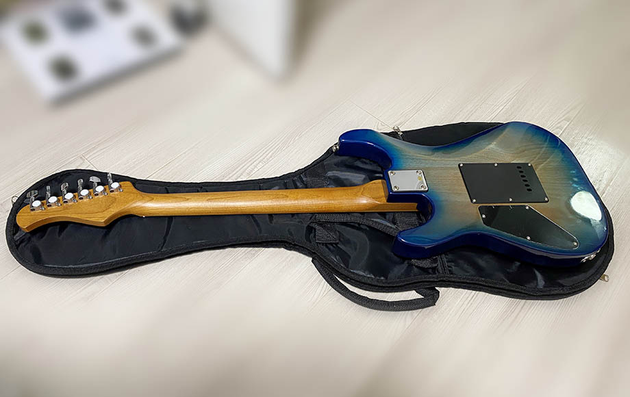 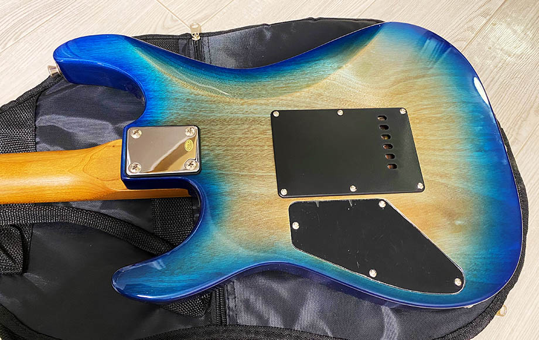
{kind=link}
{kind=link}
{kind=link}
{kind=link}
{kind=link}
{kind=link}
{kind=link}
- 購入価格：税込￥29,600
- メーカー希望小売価格：税別￥39,000
- 付属品：ソフトケース
- ボディトップ：バールポプラ
- ボディバック：マホガニー
- ネック：ローステッドメイプル
- 指板：ローステッドメイプル (400R)
- フレット：24F
- ブリッジ：シンクロナイズドトレモロ
- ペグ：ロートマチックタイプ
- PU：オリジナル H-S-H セット
- コントロール：1 Vol, 1 Tone (コイルタップ), 5 Way Selector
- スケール：648mm
- ナット幅：42mm
- カラー：BL-B (ブルー・バースト)
バッカスの HST-24HSH が最高だったので、今度は 24F でシンクロナイズドトレモロのギターが欲しいなと思い、かねてよりカラーリングが綺麗だなーと思っていた本機を 2023-01-04 に購入。
本シリーズはこのブルーバーストが明らかに人気色で、ネットでは軒並みブルーだけが売り切れだったのだが、1ヶ所だけ在庫があるサイトを見つけたので勢いでポチった。以下の動画には僕の購入した個体が映っている。
- Bacchus IMPERIAL24-BP-RSM/M RD-B BL-B Universe Series【商品紹介】エレキギター《在庫有・販売可》 #ボブ楽器店 #鹿嶋市 #茨城県 #楽器店 - YouTube
- Bacchus IMPERIAL24-BP-RSM/M BL-B | MUSICSHOP BOB
24F あるし、モダンな外見なので、Ibanez RG みたいな感じのハードロックな音が出るのかなーと思ったら、コイルタップの影響もあるのか、サウンド的にもモダンなギターサウンド。PU 出力が低くて和音の分離感が良い、「純粋なストラト」的な音が出る。例えるなら「AssH くんのサウンド」とかが近い感じ。Steve Vai や Greg Howe のような歪ませるサウンドは得意じゃない方かも。
Fender Japan ST68RH 以来、10数年ぶりに新品のギターを買った。2万9千円という激安価格だが音色の幅が広く、弾きやすさも素晴らしい。良い買い物をした。
Ibanez RG175B - Black
(写真準備中)
- 購入価格：税込￥8,750
- 指板：メイプル
- フレット：24F
- カラー：ブラック
メイプル指板でシンクロナイズド・トレモロ搭載の Ibanez RG。型番は RG175B じゃないかと思っているが、パーツ類がブラックではなくシルバー (クローム) だったので自信なし。
ヤフオクで激安だったので入札してみたら落札できた。2023-01-20 入手。トップの塗装を剥がして一度青色に塗ってみたが、筆塗りだとイマイチだったので剥がした。
- ← My Guitars 03 ： 21～30本目